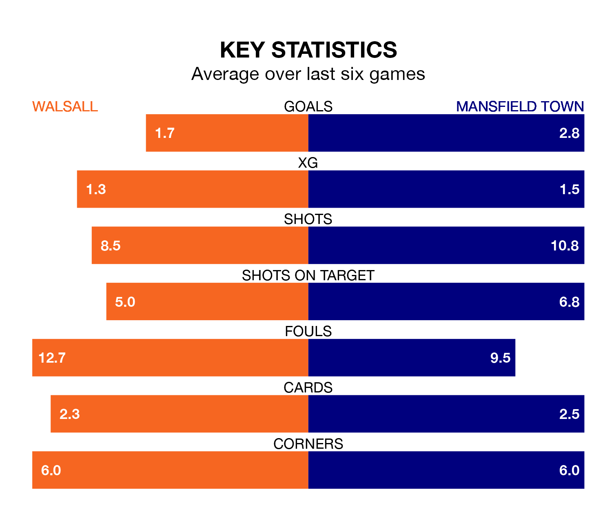

Mansfield Town are strong favourites to take all three points despite Walsall's home advantage in Saturday's match at the Poundland Bescot Stadium.
*Betting Company* are offering odds of 1.85 on Mansfield sealing the win, with the visitors sitting second in EFL League Two table.
Walsall, who are 16th in the league and 21 points behind the Stags, are priced at 3.3 to win. A draw is set at 3.5.
With 61 goals in 31 games so far this season, Mansfield are the league's third-highest scorers with 2.0 goals per game. And they are conceding fewer than average, letting in 26 goals at a rate of 0.8 per game.
Walsall, meanwhile, are below average scorers, with 1.4 goals per game, compared to a league average of 1.5. They have conceded 1.5 goals per game.
In Christy Pym, Town can rely on one of the league's safest pair of hands. He has kept 12 clean sheets in his 31 appearances this season, and no 'keeper has prevented the opposition scoring more often in EFL League Two.
In the Saddlers's net, Owen Evans has three clean sheets in 22 games. He has conceded a goal every 62 minutes, 90% more often than the 116 minutes between goals for Pym.
In the last 10 years, Walsall and Mansfield have played each other on eight occasions. Walsall won two of them, Mansfield four, and they drew twice.
On average, the Saddlers scored 1.2 goals and the Stags 1.5 in those matches.
Their last meeting was on October 28, when Mansfield won 2-1 at home.
The home team are in disappointing form in EFL League Two, with one win and three draws from their last six games.
With three wins and two draws over that period, the Stags' form is better – they have taken 11 points from 18, compared to Walsall's six.
Walsall's last match was on Tuesday, a 1-1 draw against Crawley Town, with Isaac Hutchinson getting the goal for the Saddlers.
Mansfield beat Harrogate Town 9-2 last time out, also on Tuesday, with Hiram Boateng (three), Lukas Akins (two), Will Swan (two), Davis Keillor-Dunn and Tom Nichols on the scoresheet.
Updated: 12:06 (UTC), 15/02/24